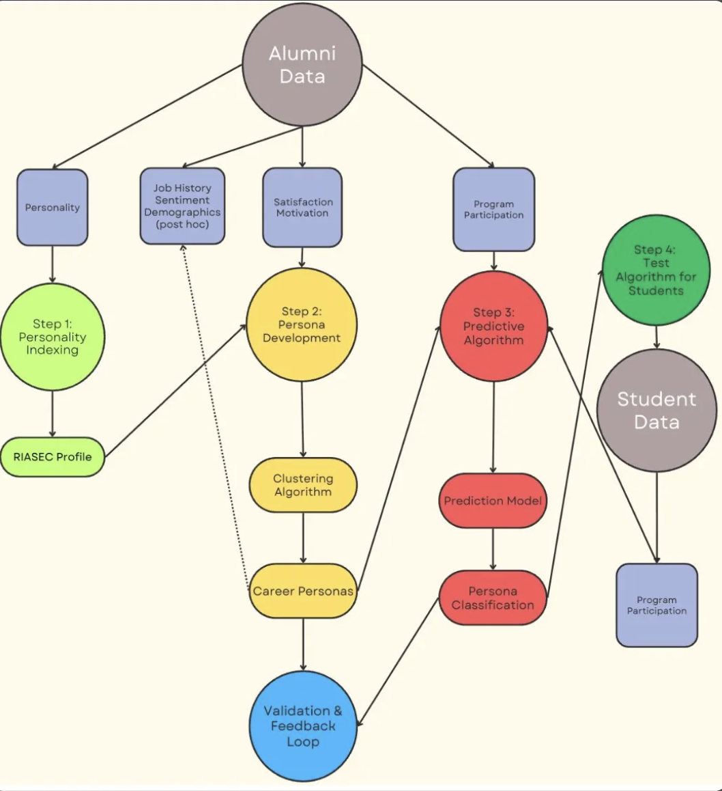

Constructing psychometric composite scores from multi-year alumni survey data, harmonized across instruments and validated with EFA and PCA.
Research Question
The first research question of the dissertation asks how RIASEC-based composite scores can be reliably constructed from multi-year survey data collected across heterogeneous instruments. The motivation is practical. Career advising in PhD programs increasingly relies on psychometric instruments to surface vocational orientation, but the underlying data is rarely clean. Surveys evolve across cohorts, item wordings shift, response scales change, and missingness is systematic rather than random. Building a usable feature set requires harmonization, not just averaging.
The study addresses this by treating composite construction as a measurement problem first and a feature engineering problem second. Each RIASEC dimension, along with allied non-RIASEC constructs such as leadership, persistence, and communication, is built from a vetted set of items, validated against latent-factor structure, and standardized into z-scores. The resulting feature space serves as the input to the persona clustering and classification work in subsequent chapters.
Approach
Alumni records spanning multiple cohorts use overlapping but non-identical survey instruments. The study employs branching logic to map variant items to canonical constructs rather than relying on heuristic substitution. Where item wording diverges meaningfully, items are excluded rather than coerced into a shared scale; where prior roles or career stages are missing, branching imputation infers reasonable values from adjacent fields rather than dropping cases. The result is a longitudinal dataset preserved in its full heterogeneity, with documentation of every transformation.

Rather than collapsing personality and behavioral dimensions into a single index, the study maintains separate composite scores for each construct. Leadership, persistence, communication, ethics, and the six RIASEC dimensions are scored independently and retained as distinct features throughout the pipeline. This profile-based approach preserves interpretability for downstream advising applications, where a single index would obscure the very distinctions advisors need to surface.
Each composite is validated against latent factor structure using exploratory factor analysis and principal components analysis. Items that fail to load on their hypothesized factor are flagged and reviewed; composites that fail to demonstrate adequate internal consistency are reconstructed. The validation step is treated as a methodological checkpoint, not a formality. The downstream clustering and classification depend on the integrity of these inputs, and any circularity introduced at this stage propagates through the rest of the analysis.
Outcome
The harmonized feature set produced from this stage forms the input to the persona clustering analysis in Part 2. Composite scores are standardized as z-scores to enable cross-construct comparison, with each dimension retained separately to preserve interpretability. The feature engineering documentation accompanies the dissertation as a methodological appendix, allowing replication on future cohort data without re-derivation of the harmonization rules.